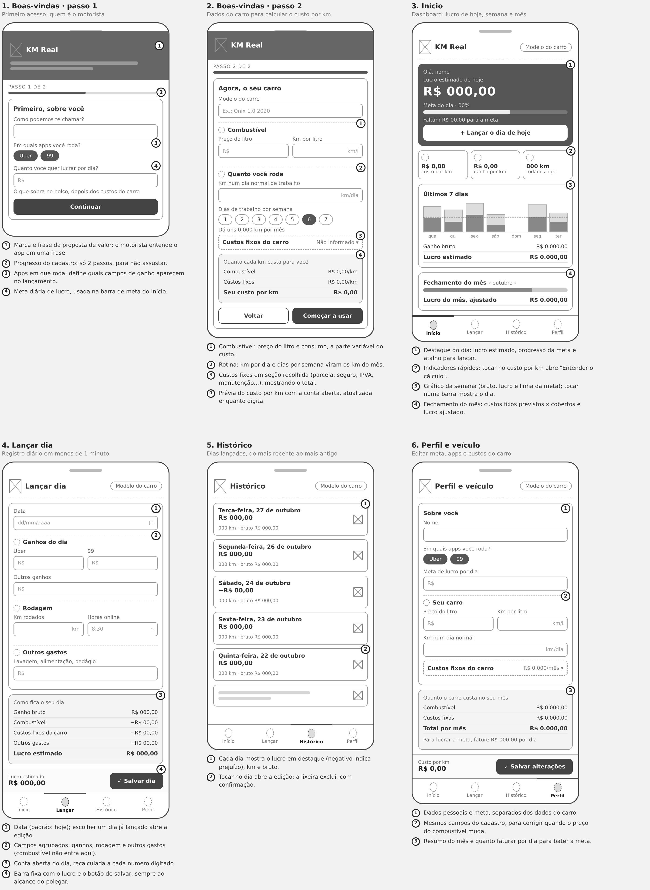
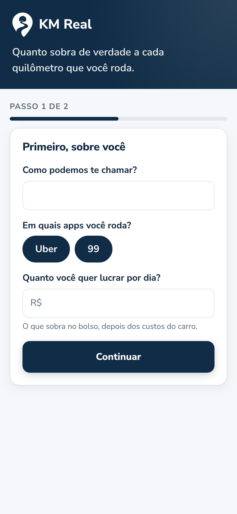
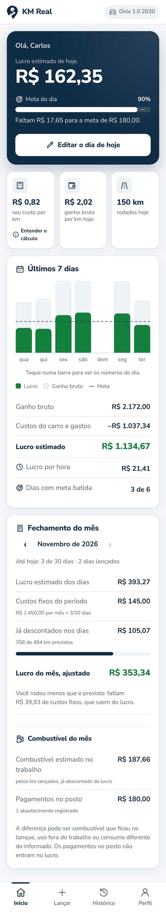
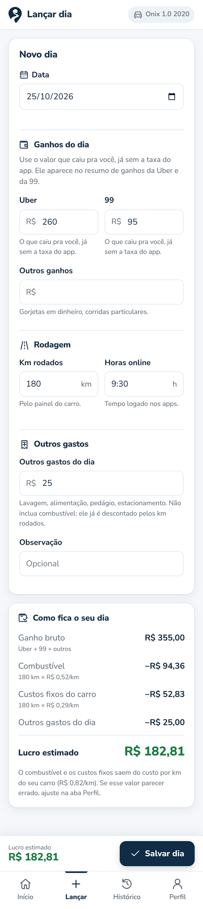
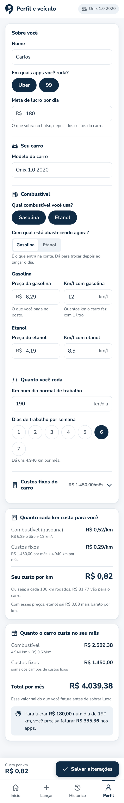

Quanto sobra de verdade a cada quilômetro que você roda.
Relatório final do Projeto Integrador
Quilômetro Labs, empresa de tecnologia fundada para o Projeto Integrador. Produto: KM Real.
| Integrante | Função | Responsabilidades |
|---|---|---|
| Rafael e Vinicius | Product Owner | Visão do produto, prioridades, pesquisa com motoristas e pitch |
| Lucas | Desenvolvedor full-stack | Arquitetura, back-end, front-end, banco de dados e repositório |
| Lucas e Rafael | UI/UX Designer | Wireframes, identidade visual, guia de estilo e protótipo no Figma |
| Vinicius | Testador | Teste de usabilidade com motoristas e testes do app antes da entrega |
A pesquisa do Prof. Sedenilso Machado, feita ao longo de dois anos com mais de 40 mil entrevistados, comparou o nível de necessidade percebido em 15 segmentos de software. O segmento escolhido pela Quilômetro Labs ficou em primeiro lugar.
O motorista de aplicativo vê o valor bruto de cada corrida, mas esse número não desconta combustível, parcela ou aluguel do carro, seguro, IPVA, manutenção e gastos do dia. Muitos acham que estão lucrando bem e, na prática, rodam perto do prejuízo. Sem saber o custo real de cada quilômetro, ele também não consegue definir uma meta diária que faça sentido.
| Descoberta da pesquisa | Como o KM Real responde |
|---|---|
| Uso utilitário vs. abandono rápido: sistemas que não resolvem uma dor financeira direta são abandonados por mais de 78% dos usuários em 30 dias. | O app resolve uma dor financeira direta: mostra quanto sobrou no bolso no dia, logo no primeiro uso. |
| Demanda por soluções de nicho: preferência por apps especialistas em vez de planilhas ou sistemas genéricos. | Feito só para motorista de Uber e 99, com a linguagem dele ("o que caiu pra você", "sobra no bolso") e campos que ele conhece (km rodados, horas online, ganho por app). |
| Decisão baseada em ROI pessoal: engajamento 3 vezes maior quando a ferramenta mostra o ganho financeiro direto. | O lucro real do dia, o custo por km e o quanto precisa faturar para bater a meta aparecem em destaque, com a conta aberta. |
| Simplificação de processos: demanda por trocar controles informais por algo simples. | Substitui o controle "de cabeça" ou no caderno por um lançamento de um minuto no fim do dia. |
O KM Real calcula o custo real por quilômetro do carro do motorista e, a cada dia lançado, mostra o lucro líquido, o progresso da meta diária, a evolução da semana e o fechamento do mês. Lucro, no KM Real, é a sobra no bolso: ganhos menos tudo o que sai do bolso por causa do carro.
Conversa com 2 motoristas de aplicativo seguindo um roteiro curto: primeiro eles contaram como controlam o dinheiro hoje, depois conheceram o KM Real.
| Motorista 1 | Motorista 2 | |
|---|---|---|
| Rotina | Roda o dia inteiro, com Uber e 99 | Faz corridas depois do trabalho |
| Objetivo | Renda principal | Renda extra |
"Eu vejo quanto entrou nos aplicativos, mas não sei direito quanto sobrou. Abasteço, pago as contas do carro e vou trabalhando. Tem dia que entra bastante dinheiro, mas parece que não sobra nada."
Depois de conhecer o KM Real:
"Eu usaria, sim. Gostei de ele mostrar o que sobra depois dos gastos. Só precisa ser rápido de preencher, porque no fim do dia a gente já tá cansado."
"Eu rodo pra fazer uma renda extra, mas às vezes fico na dúvida se tá compensando. Gasolina eu consigo acompanhar, mas pneu, óleo e essas coisas eu só lembro quando tenho que pagar."
Depois de conhecer o KM Real:
"Achei útil pra saber se essas horas a mais tão valendo a pena. Só não sei de cabeça todos os gastos do carro. Ia precisar preencher aos poucos."
| Dor | Frase do motorista | Oportunidade no KM Real |
|---|---|---|
| Vê quanto entrou, mas não quanto sobrou | "Vejo quanto entrou nos aplicativos, mas não sei direito quanto sobrou." | Lucro do dia já descontando combustível, custos do carro e gastos. |
| Gastos que não aparecem no dia a dia | "Pneu, óleo e essas coisas eu só lembro quando tenho que pagar." | A manutenção entra como valor por mês e é descontada um pouco a cada km rodado. |
| Não sabe se está compensando | "Às vezes fico na dúvida se tá compensando." | Lucro por hora e meta diária na tela inicial. |
| Cansaço no fim do dia | "Só precisa ser rápido de preencher." | Lançamento numa tela só, com poucos campos e a conta aparecendo enquanto digita. |
| Não sabe todos os gastos de cabeça | "Ia precisar preencher aos poucos." | No cadastro, uma estimativa já serve; os custos podem ser ajustados depois no Perfil. |
Carlos, motorista de app (persona criada a partir dos dois relatos)
"Tem dia que entra bastante dinheiro, mas parece que não sobra nada."
| Etapa | O que ele faz | O que sente | Oportunidade |
|---|---|---|---|
| Durante o dia | Roda e vê os ganhos entrando no app | Animado quando o dia rende | — |
| Abastece e paga contas | Paga gasolina e as contas do carro conforme aparecem | Perde a noção do total | Custo por km calculado uma vez, no cadastro |
| Fim do dia | Olha só o valor bruto | Cansado, sem saber quanto sobrou | Lançar o dia rápido e ver o lucro real |
| Gasto surpresa | Paga pneu ou óleo de uma vez | Frustrado: "não sobra nada" | Manutenção já descontada aos poucos, a cada km |
| Fim do mês | Compara o que ganhou com o que pagou | Dúvida se compensou | Fechamento do mês com o lucro ajustado |
A análise da pesquisa gerou os requisitos do sistema. Os principais:
A lista completa, com prioridade e regras de negócio, está em docs/requisitos.md no repositório.
Estrutura das 6 telas no celular, sem identidade visual: só a organização das informações e o fluxo.

Uma cor de marca (navy) e o resto neutro: quem chama atenção é o dinheiro. Verde e vermelho só aparecem em valores de lucro e prejuízo. Tipografia única, Nunito Sans, com valores em ExtraBold para leitura de relance. O símbolo junta um pino de localização com a estrada em "S".
O guia completo (cores, tipografia, 21 ícones, componentes e espaçamentos) está em docs/guia-de-estilo/.
Protótipo navegável no Figma, com componentes ligados às cores e estilos do guia, as 6 telas do celular e dois fluxos: "Primeiro acesso" e "Uso diário".
Link: figma.com/design/WvEst2KBErrDpuNFzeXu67




Telas do app funcionando, com o mesmo layout do protótipo no Figma.
| Funcionalidade | O que faz |
|---|---|
| Cadastro inicial | Dois passos: motorista (nome, apps, meta diária) e carro (combustível, km por dia, dias por semana e cada custo fixo separado), com prévia do custo por km e avisos para valores que parecem errados. |
| Custo real por km | Separado entre combustível e custos fixos, com "Entender o cálculo" na tela inicial. |
| Lançamento do dia | Ganhos por app, km, horas online e outros gastos, com a conta do dia aberta enquanto o motorista digita. Cada dia guarda o custo por km da época. |
| Tela inicial | Lucro de hoje, progresso da meta, indicadores rápidos, gráfico interativo dos últimos 7 dias e totais da semana. |
| Fechamento do mês | Compara os custos fixos reais do período com o que os dias já descontaram e mostra o lucro do mês ajustado. |
| Histórico | Lista dos dias lançados, com edição e exclusão. |
| Perfil e veículo | Tudo editável; o novo custo por km vale para os próximos lançamentos. |
| Celular e computador | Menu inferior e botão de salvar fixos no celular; menu lateral e duas colunas no computador. |
| Camada | Tecnologia |
|---|---|
| Front-end | React 18 + Vite 6 (JavaScript), CSS puro com variáveis de design |
| Back-end | Node.js 22 com Express 4 (API REST) |
| Banco de dados | SQLite, pelo módulo nativo node:sqlite (sem driver para instalar) |
| Organização | npm workspaces e concurrently (front e back sobem juntos) |
| Design | Figma (protótipo e componentes) |
km.dbO front-end nunca acessa o banco diretamente: ele chama a API, que valida os dados, aplica as regras de cálculo e grava no SQLite. As regras ficam isoladas em backend/src/calculos.js.
custos fixos do mês = parcela + seguro + IPVA ÷ 12 + manutenção + reserva para troca + outros km por mês = km por dia × dias por semana × 52 ÷ 12 custo por km = preço do litro ÷ consumo + custos fixos do mês ÷ km por mês lucro do dia = ganhos − km rodados × custo por km − outros gastos do dia
Exemplo com os dados de demonstração: gasolina a R$ 6,29 e consumo de 12 km/l dão R$ 0,52 por km; R$ 1.450 de custos fixos para 4.940 km por mês dão R$ 0,29 por km. Custo total: R$ 0,82 por km.
Duas tabelas: perfil (dados do motorista, do carro e dos custos) e lancamentos (um registro por dia, com ganhos, km, horas, gastos e o custo por km aplicado naquele dia).
| Método | Rota | Descrição |
|---|---|---|
| GET / PUT | /api/perfil | Lê ou salva o perfil e devolve o custo por km |
| GET | /api/lancamentos | Lista os dias lançados |
| GET / PUT / DELETE | /api/lancamentos/:data | Lê, salva ou exclui o lançamento de um dia |
| GET | /api/resumo | Hoje, meta, últimos dias e totais |
| GET | /api/resumo/mes | Fechamento do mês |
O fluxo principal foi apresentado aos dois motoristas da pesquisa, que disseram que usariam o app. Os pontos levantados por eles (preencher rápido e poder estimar os gastos) já são atendidos pelo lançamento numa tela só e pelo perfil editável. O roteiro do teste de usabilidade, com 4 tarefas, está em docs/teste-de-usabilidade.md.
Repositório oficial: github.com/lucasMD10/Quil-metro-Labs
O README do repositório traz a descrição do produto, a equipe, a arquitetura, as regras de cálculo, o modelo de dados, a API e os links da documentação de design.
node -v.# 1. Baixar o projeto git clone https://github.com/lucasMD10/Quil-metro-Labs.git cd Quil-metro-Labs # 2. Instalar as dependências (front e back de uma vez) npm install # 3. (Opcional) Carregar um motorista com dias de exemplo npm run seed # 4. Compilar o front e subir o sistema npm start
Depois, abra http://localhost:3001 no navegador. Sem o passo 3, o app abre no cadastro inicial.
npm start. O terminal mostra uma linha como No celular (mesmo Wi-Fi): http://192.168.0.10:3001.| Comando | O que faz |
|---|---|
npm run dev | Modo de desenvolvimento: API na porta 3001 e front na 5173, com recarga automática |
npm run seed | Recria o banco com dados de exemplo |
npm run build | Gera a versão de produção do front |
Para recomeçar do zero, apague o arquivo backend/data/km.db.